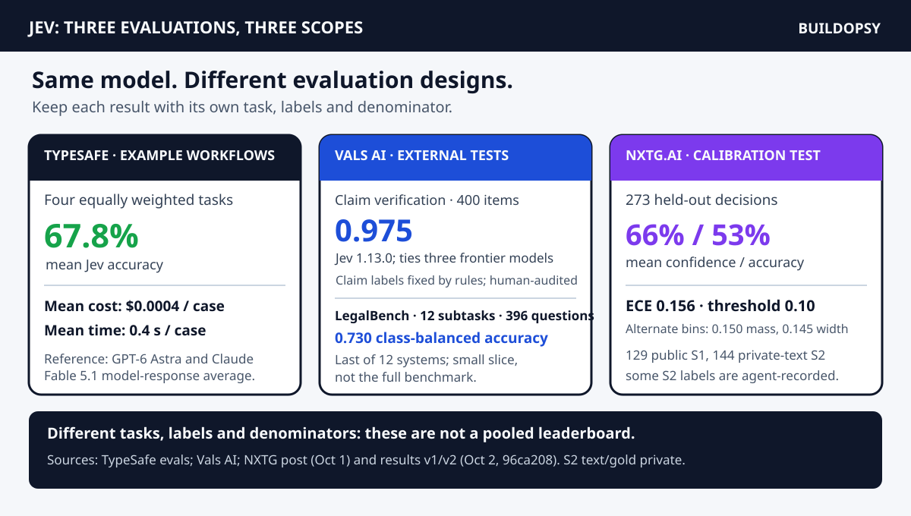
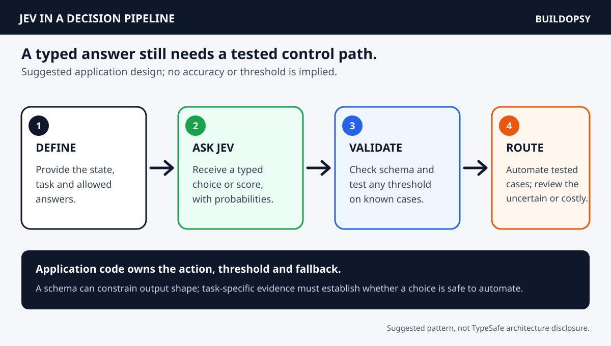

1. Launch in 90 Seconds
TypeSafe's launch post is written by founder Diogo Almeida. Its body dates the announcement September 15, 2026, while page metadata says it was published October 15. The post describes Jev as an early-access model that returns typed probabilistic decisions and reports 70–500ms end-to-end response times. TypeSafe says its published speed evaluations generally ran from West Coast laptops, where its service was based.
The same post attributes TypeSafe's 193.6× speed and 444.6× cost homepage figures to four workflow evaluations. A September 16 SiliconANGLE report says the company raised $40 million led by DCVC. Funding and launch interest do not establish Jev's decision accuracy; the measurements need to be read with their evaluation design.
2. What Jev Actually Returns
Jev does not generate strings token by token. It accepts unstructured program state, such as a ticket, log burst, message history or structured record. It evaluates typed questions defined in advance: choose from a set, score on a scale or answer yes/no with a probability. It returns typed values and probability distributions in a parallel pass; TypeSafe's System One documentation says confidence fields are returned for some question types.
The API shape is deliberately narrow. The early-access model is jev-latest, available through POST https://api.typesafe.ai/v1/systemone. The official JavaScript SDK installs as @typesafe-ai/sdk; TypeSafe's SDK index also links its Python client. At the October 17 documentation snapshot, TypeSafe's Models page lists 64k tokens per request and 32k per question for Jev 1.13 and 1.14. It says Jev 1.14 became available October 14, while jev-latest still points to the stable 1.13 release. The workflow-evaluation page does not name a Jev version or test date, so those scores cannot be assigned to 1.14 from the published page. TypeSafe describes output as too cheap to meter. Its API documentation says confidence fields vary by question type.
TypeSafe calls its training method Reinforcement Learning for Calibrated Decisions (RLCD). Its documentation says probabilities are optimized against outcomes to reflect uncertainty. The company has not disclosed the training procedure or reward formulation, so the public description does not establish how accuracy or calibration is rewarded internally. The launch post describes a parallel sampler and a hardware-aware sampling stack.
The guarantee is narrower than headlines suggest. TypeSafe describes Jev's answers as type-safe and constrains the allowed output structure. That can prevent malformed shapes; it does not prevent an incorrect choice within the schema. A confident misclassification remains possible. The launch post says Jev “can’t hallucinate”; that statement about typed outputs is not a guarantee that every decision is factually correct.

3. Vendor Claims and External Evaluations
TypeSafe-built example workflows. Its launch post reports the 193.6× speed and 444.6× cost homepage figures from four workflows built by its model-capabilities team. The undated evaluation page gives four-workflow means without identifying Jev's version: Jev 67.8% accuracy, $0.0004 per case and 0.4 seconds per case; Claude Opus 5, 73.1%, $0.1761 and 37.8 seconds. Using those displayed means, 37.8 ÷ 0.4 = 94.5× and $0.1761 ÷ $0.0004 = 440.25×. These are Jev-versus-Opus 5 ratios, while the homepage figures compare Jev with the average of GPT-6 Astra and Claude Fable 5.1; they do not reproduce that comparison. The workflow page says the Astra and Fable reference responses used high thinking, while evaluated models used provider-default reasoning. TypeSafe says its choices of reference models and team-built workflows may introduce bias.
Vals AI's external tests. Its October 6 evaluation tests Jev 1.13.0 on 400 claim-verification items built from the latest 10-Ks of 48 U.S. companies. Construction rules fix the answers before model calls, and a person audited every claim item. Jev scores 0.975 and ties GPT-6 Astra, GPT-6.1 Sol and GPT-6 Luna on this task. Vals reports median latency about 194× lower than Astra when asked for 32 judgments about one long document; this is a different test from TypeSafe's multi-step workflows.
Vals's embedded chart data reports claim-test cost of $0.02469 for Jev and $12.29347 for GPT-6 Astra per 1,000 cases. The calculation $12.29347 ÷ $0.02469 = 497.91× supports its rounded 1/498 cost statement. The chart labels round those prices to $0.02 and $12; dividing only the rounded labels would give 600×. On a separate 396-question slice of 12 LegalBench subtasks, Jev ranks last of 12 on class-balanced accuracy (0.730). Vals says the small slice is not representative and that the public benchmark probably appears in the LLMs' training data. Its reported ECE is 0.011 on claim verification and 0.108 on LegalBench, so the calibration result varies by task.
NXTG.AI's calibration test. In an October 1 post, Asif Waliuddin reports Jev 1.13.0 at 66% mean confidence and 53% accuracy across 273 held-out decisions. The pinned Part 1 results report a primary equal-mass-bin ECE of 0.156; they also record an alternate equal-mass cut of 0.150 and an equal-width value of 0.145. Each exceeds the author's pre-registered 0.10 threshold. The later Part 2 results and per-item CSV include Part 1 draw-1 JEV outcomes for the 144 S2 cases: an opaque item ID, class, option count, correct flag and top-1 confidence. Combining those rows with the 129 Part 1 S1 JEV test records from the released S1 file gives 273 items: 145/273 = 0.5311355 accuracy, 0.6617283 mean confidence, 0.1563115 ECE with tie-preserving equal-mass bins, and 0.1454645 with equal-width bins. These reproduce the rounded public primary metrics. The S2 text and gold fields remain private, so readers cannot independently re-audit the source labels or prompts. Waliuddin also says the pre-registration commit is private. This is evidence about that test, not a calibration result for every task.
4. Where It Fits in Agent System Design
One possible use is a decision layer in front of more expensive models: classify a support ticket, score relevance before retrieving a large context, check a tool call before execution or verify agent output after generation. Keep the surrounding system responsible for broader reasoning and execution. Automate only the cases that pass task-specific evaluation; route uncertain or high-impact decisions to a frontier model or a person.
This pairs well with the defensive standard on this site. Read Agent Egress Checklist: Write Blocks, Provenance, Rate Limits before wiring any classifier into actuation. Default-deny egress, read-only mounts and write alerts still apply when the decider is cheap. A fast decider with unbounded egress is a faster incident. Budget retries with the retry-storm calculator so bounded attempts with backoff turn replays into line items.
For cost framing, start with Learn Inference Economics and Learn AI Agents. A reasonable split is Jev for repeated bounded calls where possible answers are known in advance, and frontier models for open prose, code and one-off reasoning. Keep the control loop and arithmetic in code. Log calls for later audit, and do not set confidence thresholds until they are validated on the target task.
5. The Three Open Risks
Calibration drift. Confidence can drive automation only when it tracks outcomes on the task in production. Vendor calibration on vendor workflows does not transfer automatically. Choose a threshold on labeled calibration data, then validate it on an untouched holdout before deployment. Publish the setting in configuration and monitor error when live labels become available.
Price durability. At $0.042 per million input tokens with no output charge, a small project costs little. If the price reflects launch subsidy, unit economics can change after lock-in. Model the stack at 5× and 10× the current input price before standardizing. If the design only wins while compute is nearly free, it is a promotion, not an architecture.
Category capture. Whether System One becomes a durable model category or remains a vendor-specific product is open. Build behind an interface you can swap. Pin jev-latest in tests only; pin immutable versions in production.
6. The Verdict
Typed outputs can simplify a bounded decision path, and TypeSafe reports substantial speed and price advantages on its chosen workflows. Vals AI reports a similar order of speed advantage on a different 32-judgment test and strong claim-verification accuracy, alongside weaker LegalBench results and a task-dependent calibration measure. NXTG.AI reports that confidence exceeded accuracy on its held-out test. Those studies add evidence; they do not reproduce TypeSafe's complete workflow suite or establish performance on a buyer's task.
Use a decision model only where the output schema, confidence behavior and fallback are tested for the actual task. Keep code responsible for validation and action, and retain a human path where mistakes carry material cost. Do not infer calibration or broad accuracy from typed output alone.
Fast, typed decisions are useful. Reliability still depends on the task and the evidence.
Sources and Method
Related files on this site: Agent Egress Checklist, Learn Inference Economics and Learn AI Agents. TypeSafe's launch post is company-reported. Its workflow page is undated and does not identify the Jev version. Vals AI and NXTG.AI report separate evaluations; their tasks, labels, sample sizes and methods differ. The launch post's body dates the announcement September 15; its page metadata says published October 15, 2026. NXTG's S2 source text and gold fields remain private even though per-item outcomes are public. NXTG's ECE readings vary by binning, as described above. No training procedure is claimed beyond TypeSafe's published RLCD description.
- TypeSafe AI: Introducing System One Models and Jev (body dated Sep 15; page metadata published Oct 15, 2026)
- TypeSafe: workflow evaluations, four-workflow averages, queries and reference-label method
- TypeSafe System One: typed answers, question-specific confidence and RLCD description
- TypeSafe Models: Jev versions, aliases and current context limits (checked Oct 17, 2026)
- TypeSafe JavaScript/TypeScript SDK installation and package name
- Vals AI: An Independent Evaluation of TypeSafe's Jev (Oct 6, 2026)
- NXTG.AI: I tested Jev's confidence. Don't trust the number yet. (Oct 1, 2026)
- NXTG.AI results v1, pinned to commit 96ca208 (Oct 2, 2026)
- NXTG.AI Part 2 results: public per-item outcome scope (Oct 2, 2026)
- NXTG.AI pinned README: public S1 records, S2 text privacy and Part 2 outcome release
- NXTG.AI Part 2 per-item outcomes, including Part 1 draw-1 comparator rows (Oct 2, 2026)
- NXTG.AI released Part 1 S1 per-call records
- NXTG.AI scorer: tie-preserving equal-mass and equal-width ECE
- NXTG.AI pre-registration v1, pinned to commit 96ca208
- Vals AI embedded chart data: claim-test per-1,000 prices (checked Oct 17, 2026)
- SiliconANGLE: TypeSafe AI exits stealth with 40M to build AI for use by software (Sep 16 2026)